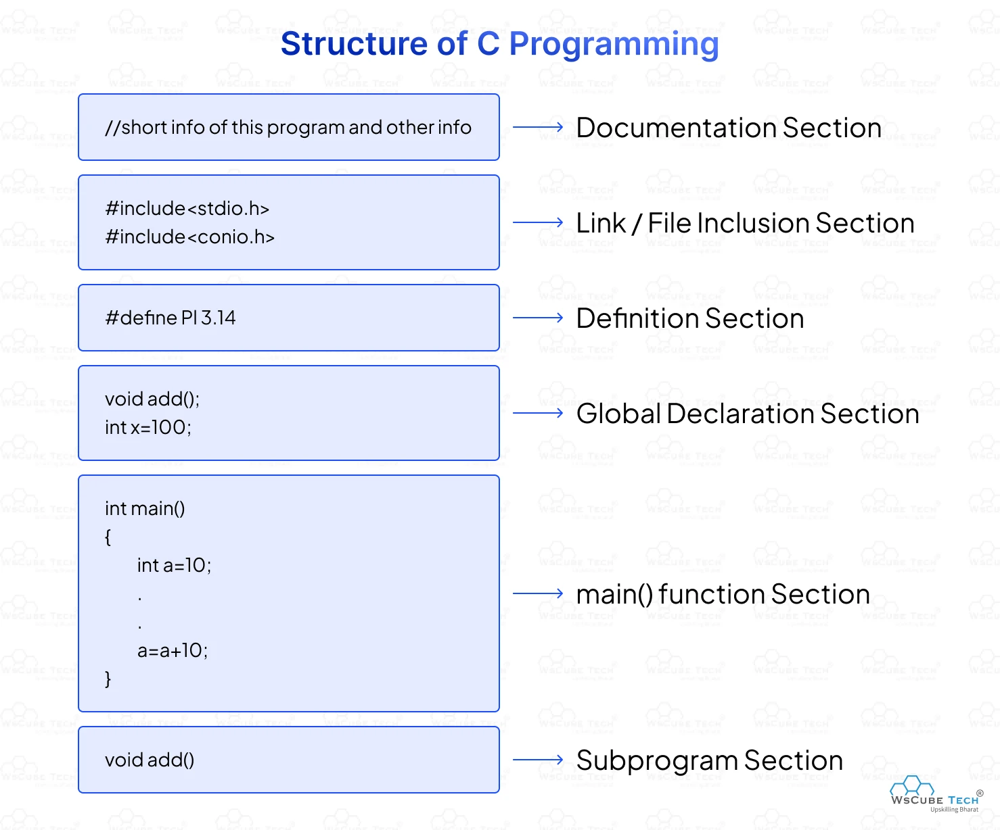
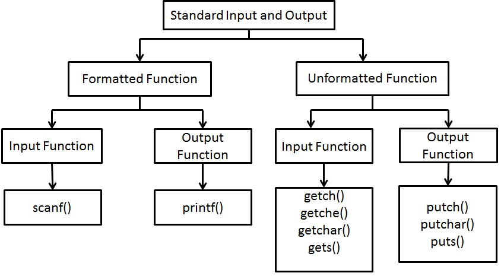

In the C programming language, float is a fundamental data type used to store fractional or decimal numbers. It is a single-precision floating-point type that adheres to the IEEE 754 standard for memory representation
• C is case sensitive. All commands in C must be lowercase. • C has a free-form line structure. End of each statement must be marked with a semicolon.

